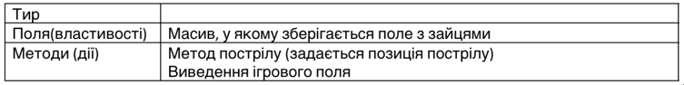
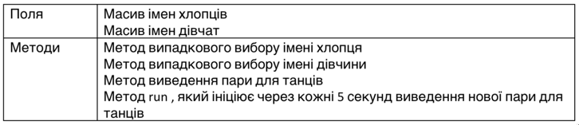

Задача 0
Дано два об’єкта. Обидва містять масив цілих чисел. При цьому у одному з них є функція знаходження суми, а у іншому – функція для знаходження добутку тих, які знаходяться між заданими мінімальним і максимальних значенням. Використати обидва методи стосовно обидвох об’єктів (використати call, apply)
Задача 1
Створити об’єкт «Тир». У масиві зберігаються 1, якщо у цьому квадраті є заєць і 0 в іншому випадку.
Задача 2
Створити об’єкт «Авто».

Задача 3
Розробити клас MultChecker для перевірки таблиці множення
Задача 4
Розробити клас Banner

Задача 5
Розробити клас «Керівник танців»
